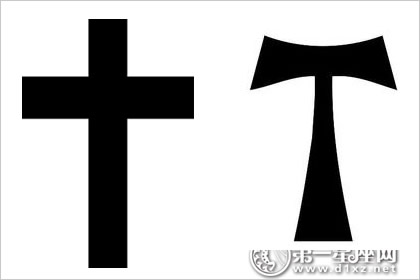
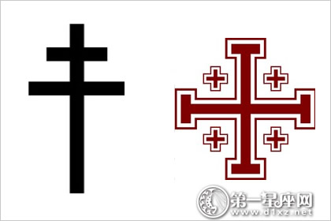
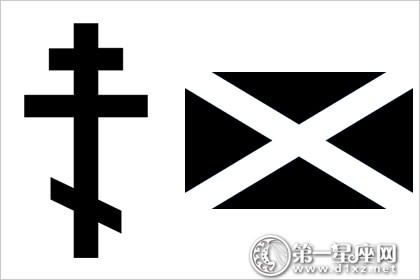
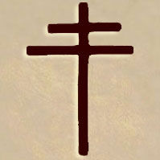
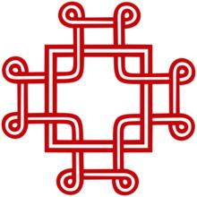
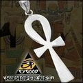
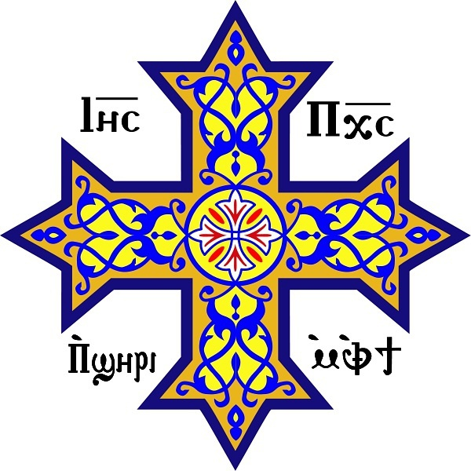
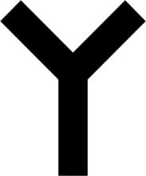
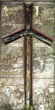
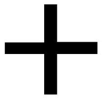

找神仙去03
2016.09.27 22:27 转帖发表在 猫眼看人
资料贴。
纹章学百科（Berry）提到了385种不同的十字架。绝大多数是纯粹的装饰性以及纹章意义（同上，文章.十字架，第四卷，324搜索页以及下一页）。这里有列举了主要几种。
拉丁十字拉丁十字架是基督教十字架中最常见的一种。 它由长短两条梁组成。其中竖着的那根要长于横着的那根。竖着的那一根象征着上帝的国度，横着的那一根象征着人间，两根相交象征着天国与人间的统一。
T型十字架，又称安东尼十字架、Tau十字架或埃及十字架也叫强盗十字架，因为和耶稣一起吊死的强盗就是吊死在这种十字架上面。其中Tau十字架的名字源自希腊文第十九个字母τ（音“涛”），同时也是希伯来文最后一个字母Taw。

有启发就赞赏一下
赞赏楼主的人
文章很赞，分享给好友
找神仙去03
第2楼2016-09-27
大主教十字大主教十字（Patriarchal cross）又称拜占庭十字，是基督宗教符号圣十字架的一种变体。与拉丁十字基本相似，但上方多了一个小横杠。在拜占庭希腊和东欧的十字符号中还会在大主教十字下方再加一个倾斜的小横杠，这也是东正教常用的符号之一。
耶路撒冷十字，有时也被称作为“十字军十字”。是由一个被四个小希腊十字所围绕的一个大希腊十字，所组成的纹章十字或基督教符号，象征福音从耶路撒冷传向地的四极。
这个十字更简单的形式（大十字四端没有延伸）常被称为“十字军十字”，这是因为当年第一次十字军东征的时候，教宗乌尔巴诺二世将一面带有此标志的教宗旗给予了十字军战士。而且后来，这个十字也成为了耶路撒冷拉丁王国的标志。

找神仙去03
第3楼2016-09-27
东正教十字架，拜占庭帝国时代出现的十字架，第一横代表耶稣的头，最底下的斜杠代表耶稣的脚，为东正教所用。
圣安德鲁十字圣安德鲁十字是呈“X”状的十字符号，相传耶稣门徒安德鲁就是在此十字架上殉教。苏格兰国旗、牙买加国旗、俄罗斯海军旗帜及不少其他旗帜或纹章均以此符号组成。

找神仙去03
第4楼2016-09-27
洛林十字 洛林十字与大主教十字相似，被喻为“真正的十字”(crux vera)，由1099年开始，由法国洛林公爵布永的戈搜索弗雷所采用成为洛林家族的纹章，在第二次世界大战时夏尔・戴高乐将军更采用此十字作为法国抵抗运动的徽号，自由法国的象征。

找神仙去03
第5楼2016-09-27
凯尔特十字（爱尔兰语：cros Cheilteach）[1]是一个中央交叉处连接着一个圆环的十字之符号。在早期，凯尔特十字通常是指一种立在立方体基座上被称为high cross的石碑，石碑中的圆环是被用强化四肢连接的工具。早期的high cross拥有一个宽广而朴素的正面，并且刻上了许多动物的图案；而到了晚些的时候，其表面则被刻上了诗歌里的题词。
找神仙去03
第6楼2016-09-27
马其顿十字架为马其顿东正教所用

找神仙去03
第7楼2016-09-27
圣伯多禄十字（拉丁语：Crux de Sanctus Petrus）是一个反转的拉丁十字，俗称逆十字。 正十字代表耶和华的仁慈， 那么这逆十字就代表撒旦的救赎。
还有一种解释是“圣彼得十字架”，圣徒彼得在罗马殉难的时候，向行刑人要求“请把我倒过来钉在十字架上，我的主曾为我竖在十字架上，我不配像他一样受死”，于是倒吊着受刑。这就是逆十字的由来。
中文名 逆十字。
找神仙去03
第8楼2016-09-27
教宗十字（拉丁语：ferula）是罗马教宗的标志。作为实体的十字，它在游行时被举在教宗前面，或者被教宗用作其牧杖(pastoral staff，或称crosier)。
找神仙去03
第9楼2016-09-27
马耳他十字是医院骑士团以及马耳他骑士团所使用的符号，形状由四个“V”字组成，设计基于第一次搜索十字军东征时所使用的十字。 生命之符十字生命之符（符号：U+2625 ☥），又称安卡，是埃及象形文字（又称圣书体）的字母，代表词语ʿnḫ，解作生命。部份古埃及的神�o手持生命之符的圈，或两手各执生命之符，交叉双手放于胸前。拉丁文称此符作crux ansata，“有柄的十字”之意。
找神仙去03
第10楼2016-09-27
生命之符十字生命之符（符号：U 2625 ?），又称安卡，是埃及象形文字（又称圣书体）的字母，代表词语?n?，解作生命。部份古埃及的神�o手持生命之符的圈，或两手各执生命之符，交叉双手放于胸前。拉丁文称此符作crux ansata，“有柄的十字”之意。

找神仙去03
第11楼2016-09-27
旧科普特十字架旧科普特十字架源自生命之符十字，圣马克将基督教传入埃及之后，早期的埃及基督徒开始使用这个符号 科普特十字架为旧科普特十字架的变形，主要用于亚历山大时期埃及基督教。 新科普特十字新科普特十字架是当今埃搜索及基督徒和科普特亚历山大东正教会使用的十字架，源自旧科普特十字架。

找神仙去03
第12楼2016-09-27
盗贼十字也被叫做弗卡十字或Y十字

找神仙去03
第13楼2016-09-27
铁十字本身源自条顿骑士的一个手十字饰物，自大约1870年以后成为德国三军的通用标志。铁十字勋章在德国文化中依然是有力的军事象征，并且于1955年被西德军方再次采用。
找神仙去03
第14楼2016-09-27
葡萄十字也叫圣厄尔尼诺十字，为格鲁吉亚东正教教会所用。

找神仙去03
第15楼2016-09-27
希腊十字正十字架，等臂十字架，为希腊东正教所用。

找神仙去03
第16楼2016-09-27
圣乔治十字旗
白底红十字旗的声名显赫与圣乔治有密切关联。圣乔治是4世纪的一名罗马士兵，他为基督教徒脱离迫害作出莫大贡献。